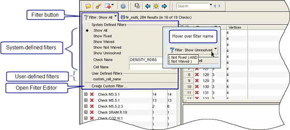
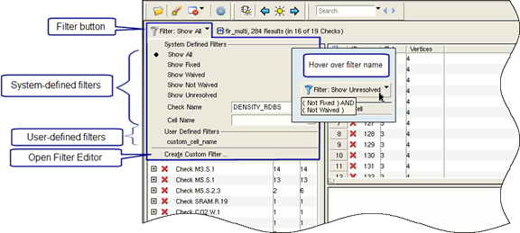

Applying DRC Results Filters
DRC results filters
are selected from a list of system-defined and user-defined result
filters.
Procedure
- Click the filter button
 to display filter
selections in a dropdown list, as shown in Figure 1. Figure 1. DRC Results Filter Menu
to display filter
selections in a dropdown list, as shown in Figure 1. Figure 1. DRC Results Filter Menu
Results
Only DRC results that satisfy the filter are shown in the Calibre RVE display. The following items are true when a filter is applied:
When highlighting results with a filter applied, only the filtered results are highlighted.
The applied filter is associated with the database and applied the next time the database is opened.
You can save the subset of the results database that is selected by the applied filter. Select File > Save Results As, and choose the option “Displayed Results”.